WP8和Win8 UI布局之XAML
XAML是eXtensible Application Markup Language的英文缩写，相应的中文名称为可扩展应用程序标记语言，它是微软公司为构建应用程序用户界面而创建的一种新的描述性语言。XAML提供了一种便于扩展和定位的语法来定义和程序逻辑分离的用户界面，而这种实现方式和ASP.NET中的"代码后置"模型非常类似。XAML是一种解析性的语言，尽管它也可以被编译。它的优点是简化编程式上的用户创建过程，应用时要添加代码等。
XAML示例
下面是创建按钮的简单 XAML 示例。
XAML
运行应用时，它看起来像下面这样：
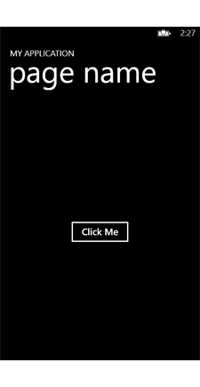
Button 控件是由 <Button> 元素指定的。Width 和 Height 特性指定按钮的大小。当您在 Visual Studio 中创建新的 Windows Phone 应用时，将生成 <Grid> 且它将被用来放置对象。若要了解关于屏幕布局的更多信息，请参见Windows Phone 的布局。
可以使用 Visual Studio 生成 XAML。例如，您可以将按钮从“工具箱”拖到设计图面。下面演示了 Visual Studio 可能会生成的 XAML。（XAML 的外观将有所不同。）
XAML
请注意，Visual Studio 添加了某些其他的特性（例 HorizontalAlignment 和 Margin）来放置按钮。如果您的需要非常明确，额外的“管道铺设”可能不适合。当然，您也可以使用 Visual Studio UI 更改这些特性；但在某些情况中，您可能希望直接编辑 XAML。
使用声明性语言（如 XAML）的最大好处之一是：可以明确划分构成 UI 的标记和用于指示应用执行操作的代码。例如，您团队中的设计人员可以设计 UI 体验，然后将 XAML 交给开发人员来添加程序代码。即使设计人员和开发人员是同一个人（经常是这种情况），您可以使用 XAML 文件 (.xaml) 保存您的 UI 并使用代码隐藏文件（ .cs 和 .vb）保存程序代码。
注意：XAML元素与程序代码创建UI是等效的，只是XAML更加简单。当需要动态创建UI时只能在程序代码中实现了。
XAML和可视树
在 XAML 中，您拥有能够将其他元素（节点）置于其下方（子元素）的元素（例如，<Button /> 和<Grid>）。此父/子关系可以指定诸如如何在屏幕上放置对象以及它们如何响应用户启动事件等内容。请看下面的示例。
运行应用时，它看起来像下面这样：
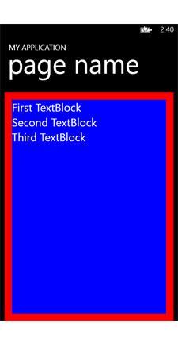
XAML
蓝色 StackPanel 包含在红色 Grid 中。TextBlock 元素包含在 StackPanel 中（TextBlock 元素是 StackPanel的子元素）。此外，TextBlock 元素彼此堆叠，以便它们能够在 XAML 中声明。
下面的树示意图演示了元素之间的关系。
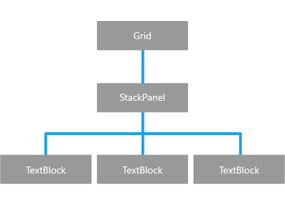
除了能够确定内容的呈现方式，可视树还能够影响事件的处理方式。许多典型事件（称为“路由事件”）会在树中向上“冒泡”事件。例如，您可以将事件处理程序附加到能够处理单击鼠标左键时出现的情况（MouseLeftButtonDown 事件）的 StackPanel。下面的 XAML 演示了如何将名为 commonMouseHandler的 MouseLeftButtonDown 事件处理程序添加到 StackPanel。
XAML
</Grid>
下面的代码演示了用于处理事件的程序代码。
C#
private void commonMouseHandler(object sender, RoutedEventArgs e){
FrameworkElement feSource = e.OriginalSource as FrameworkElement;
switch (feSource.Name)
{
case "firstTextBlock":
firstTextBlock.Text = firstTextBlock.Text + " Click!";
break;
case "secondTextBlock":
secondTextBlock.Text = secondTextBlock.Text + " Click!";
break;
case "thirdTextBlock":
thirdTextBlock.Text = thirdTextBlock.Text + " Click!";
break;
}
}下图演示了事件如何在树中向上冒泡。
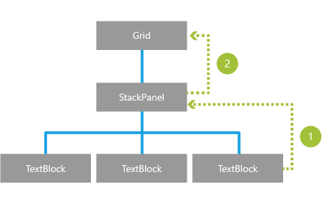
例如，我们假设用户单击了 TextBlock。
1. MouseLeftButtonDown 事件将向上冒泡到父 StackPanel。
2. 接下来，MouseLeftButtonDown 事件将在树中向上冒泡到 Grid。
由于事件继续在树中向上移动，您也可以“侦听” Grid 元素中的 MouseLeftButtonDown 事件
不仅仅是静态UI
使用 XAML，您可以做比显示静态 UI 更多的事情。您可以创建动画、嵌入视频和仅使用标记绑定到数据。下面是使用 XAML 创建的简单动画的示例。
XAML
C#
// When the user clicks the rectangle, the animation begins.
private void Mouse_Clicked(object sender, MouseEventArgs e){
myStoryboard.Begin();
}这是使用 XAML 指定内容的行为（而不是指定布局或其他静态 UI）的示例。Storyboard 元素可定义一些动画的常见属性，例如，什么对象要进行动画处理。Storyboard 的子元素（例如，LinearDoubleKeyFrame）指定动画的执行方式。
Android UI布局之XML
Android利用xml安排UI布局 ，xml文件是树型组织的，控制页面的布局。
示例
下面是一个按钮控件的xml文件：
类名字Button 是xml元素的名字。
android:text 定义了控件的内容。
android:layout_width 和android:layout_height是大小。
如果在 java程序代码中引用控件，那么需要一个android:id。通过在activity 的onCreator()方法中加入代码：setContentView(R.layout.main);可以把xml文件中定义的元素显示出来。
Xaml优点
xml（eXtensible Markup Language，简称: XML）是一种标记语言，用于标记电子文件使其具有结构性的标记语言，可以用来标记数据、定义数据类型，是一种允许用户对自己的标记语言进行定义的源语言。尽管xml具有语法简明、易用等优点，但是与xaml相比，xml有很多不足。XAML简化了.Net Framework 3.0编程模式上的用户界面创建过程，使用XAML开发人员可以对程序的所有用户界面元素(例如文本、按钮、图像和列表框等)进行详细的定置，同时还可以对整个界面进行合理化的布局，这与使用HTML非常相似。但是由于XAML是基于XML的，所以它本身就是一个组织良好的XML文档，而且相对于HTML，它的语法更严谨、更明确。预计以后大部分的XAML都可由相应的软件自动生成，就如同我们现在制作一个静态页面时，几乎不用编写任何HTML代码就可以直接通过Dreamweaver软件生成一个美观的页面。但是最初通过手动编写XAML代码将是一次绝佳的学习体验，虽然实现的过程繁杂了些，但是将加深您对XAML语法和各个元素的理解。
IOS UI布局之Xib
Xib文件是描述应用外观的视觉元素，包含了窗口、视图、控制和其他，它也可以描述非视觉元素，如你应用中管理窗口和视图的对象。Xib是以XML编码的文件，即 Xib文件的本质是用一份XML的脚本描述了程序员在Xcode中对文件中View及其子类等的设置，ViewController读取xib文件以控制界面布局。
Windows Phone的布局
布局概述
布局指在 Windows Phone 应用中调整对象大小和定位对象的过程。若要定位可视对象，则必须将它们置于源自 Panel 的容器控件或其他容器对象中。Windows Phone 提供各种不同的 Panel 控件，如 Canvas、StackPanel 和 Grid，它们相当于容器，让您可以定位和排列控件。
Windows Phone 布局系统既支持绝对布局，也支持动态布局。在绝对布局中，使用显式 x/y 坐标定位控件（例如，通过使用 Canvas）。在动态布局中，用户界面根据不同的屏幕分辨率自动调整大小（例如，通过使用 StackPanel 或 Grid）。
绝对布局
在绝对布局中，通过指定子元素相对于其父元素的准确位置，在布局面板内排列子元素。绝对定位不考虑屏幕大小。如果应用要求 UI 元素为绝对定位，您可以针对不同的屏幕分辨率设计不同的页面，或者使用缩放。
Windows Phone 提供 Canvas 控件以支持绝对定位。在默认情况下，当您创建新的 Windows Phone 应用项目时，根布局面板是 Grid，它在绝对定位的基础上创建布局，您必须用 Canvas 替换 Grid。
若要在画布上定位控件，则在控件上设置以下附加属性。当您在 Visual Studio 中使用设计器时，这些属性会在您将控件拖至设计图面时更新。
Android绝对布局
Android中使用AbsoluteLayout实现绝对布局，可以让子元素指定准确的x/y坐标值，并显示在屏幕上。(0, 0)为左上角，当向下或向右移动时，坐标值将变大。AbsoluteLayout 没有页边框，允许元素之间互相重叠(尽管不推荐)。由于Android设备有着各自不同的分辨率，采用绝对布局不能适应这些不同的分辨率设备。Google官方的文档中也注明其已经过期，所以一般情况下都不再使用该种布局方式。
动态布局
在动态布局中，用户界面会根据不同的屏幕分辨率正确显示。通过指定子元素相对于其父元素应该如何排列以及应该如何换行来排列子元素。例如，您可以在面板上排列控件并指定它们应水平换行。若要使用自动或成比例调整大小，则必须向 Height 和 Width 属性分配特殊的值。以下是针对动态布局的建议设置：
● 将控件或布局的高度和宽度设置为 Auto。当这些值用于 Grid 布局中的控件时，控件填充其所在的单元格。控件以及 Grid 和 StackPanel 布局支持自动调整大小。
● 对于包含文本的控件，移除 Height 和 Width 属性，设置 MinWidth 或 MinHeight 属性。这可以防止文本缩小至不可读的大小。
● 若要在 Grid 布局中，为 RowDefinition 和 ColumnDefinition 元素设置成比例值，则使用相对的Height 和宽度值。例如，若要指定一列比另一列宽 5 倍，则在 ColumnDefinition 元素中，对 Width 使用“*”和“5*”。
Android动态布局
Android 中除了AbsoluteLayout（绝对布局）之外还有四种布局，分别是LinearLayout（线性布局）、FrameLayout（单帧布局）、RelativeLayout（相对布局）、和TableLayout（表格布局）。这是种布局可以根据不同的屏幕分辨率和控件大小自动调整并正确显示。
LinearLayout按照垂直或者水平的顺序依次排列子元素，每一个子元素都位于前一个元素之后。如果是垂直排列，那么将是一个N行单列的结构，每一行只会有一个元素，而不论这个元素的宽度为多少；如果是水平排列，那么将是一个单行N列的结构。如果搭建两行两列的结构，通常的方式是先垂直排列两个元素，每一个元素里再包含一个LinearLayout进行水平排列。FrameLayout布局中，整个界面被当成一块空白备用区域，所有的子元素都不能被指定放置的位置，它们统统放于这块区域的左上角，并且后面的子元素直接覆盖在前面的子元素之上，将前面的子元素部分和全部遮挡。RelativeLayout按照各子元素之间的位置关系完成布局。在此布局中的子元素里与位置相关的属性将生效。例如android：layout_below, android:layout_above等。子元素就通过这些属性和各自的ID配合指定位置关系。TableLayout顾名思义，此布局为表格布局，适用于N行N列的布局格式。一个TableLayout由许多TableRow组成，一个TableRow就代表TableLayout中的一行。TableRow是LinearLayout的子类，它的android:orientation属性值恒为horizontal，并且它的android:layout_width和android:layout_height属性值恒为MATCH_PARENT和WRAP_CONTENT。所以它的子元素都是横向排列，并且宽高一致的。这样的设计使得每个TableRow里的子元素都相当于表格中的单元格一样。在TableRow中，单元格可以为空，但是不能跨列。
屏幕方向
Windows Phone
Windows Phone 支持以下屏幕方向：
● 纵向
● 向左横向
● 向右横向
用户可以通过旋转设备轻松启动从一个方向到另一个方向的更改。在模拟器中测试您的应用时，您可以通过单击模拟器工具栏中的按钮，切换屏幕方向。方向按钮包含带箭头的矩形，它们指示方向的更改。
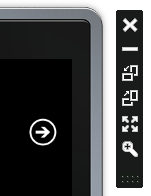
在纵向方向中，页面按垂直方向显示，以使页面的高度要大于其宽度。
在两种横向方向的任一方向中，“状态栏”和“应用程序栏”各自位于具有“电源”和“启动”按钮的屏幕的一侧。横向左视图的“状态栏”在左侧，横向右视图的“状态栏”在右侧。
应用的默认方向为纵向，并且您必须添加附加代码以支持横向。您不能只指定向左横向或向右横向方向。如果要支持横向方向，您必须同时支持向左和向右两个方向。要指定应用支持纵向和横向，您必须在 XAML 或代码中将SupportedOrientations 属性设置为 PortraitOrLandscape。
可以使用不同的方法，以纵向或横向方向显示内容。其中两种方法是滚动和网格布局。
1. 滚动
滚动方法使用放置在 ScrollViewer 控件内的 StackPanel 控件。如果要显示列表中的内容或者如果您在页面上拥有一个接着一个显示的不同控件，请使用此方法。StackPanel 允许您在应用中一个接一个地对子元素进行排序，且当您从纵向切换到横向时，如果屏幕上容纳不下 UI 元素，ScrollViewer 控件允许您滚动浏览StackPanel。
要使用滚动方法，通常您会执行以下步骤。
● 将页面的 SupportedOrientations 属性更改为 PortraitOrLandscape。
● 将“内容面板”区域中的默认 Grid 替换为 ScrollViewer 和 StackPanel。
2. 网格布局
网格布局方法将 UI 元素放置在 Grid 中。当发生方向更改时，您可以采用编程方式重新将元素放置在 Grid 的不同单元格中。
要使用网格布局方法，通常您会执行以下步骤。
1. 将页面的 SupportedOrientations 属性更改为 PortraitOrLandscape。
2. 将 Grid 用于内容面板。
3. 创建一个 OrientationChanged 事件处理程序并添加代码以重新将元素放置在 Grid 中。
Android中屏幕方向改变处理
Android支持纵向和横向两种屏幕方向，默认为纵向。当屏幕方向发生变化时，所有用户界面上的东西都需要进行更新，以适应新的屏幕方向。因为 Activity 是与用户交互的最主要的机制，它包含了处理配置改变的专门支持。除非你特殊指定，否则当屏幕方向发生改变时，你当前的 activity 都将被销毁，这销毁是通过一个正常的 activity 生命周期过程（ onFreeze(Bundle) , onPause() , onStop() , 和 onDestroy() ）进行的。如果 activity 之前正在前景画面，当这个实例的 onDestroy() 调用完成后将会启动这个 activity 的一个新的实例，并将前面那个实例中 onFreeze(Bundle) 所保存的内容传递给新的实例。因为任何的应用资源（包括 layout 文件）都有可能由于任何配置值而改变。因此处理配置改变的唯一安全的方法就是重新获取所有的资源，包括 layout 、绘图资源（原文 drawables ）、字符串资源。由于 activity 已经如何保存自己的状态并从这些状态中重建自身，所以 activity 重新启动自身来获得新的配置将是一个非常便利的途径。
IOS屏幕方向
IOS支持Portrait、PortraitUpsideDown、LandscapeLeft、LandscapeRight四种屏幕方向。利用UIViewController控制屏幕旋转，通过依次调用ViewController的willRotateToInterfaceOrientation:duration、viewWillLayoutSubviews、willAnimateRotationToInterfaceOrientation:duration、didRotateFromInterfaceOrientation方法实现。
更多相关内容参见IOS屏幕旋转
分辨率
Windows Phone 8 支持具有 WVGA、WXGA 和 720p 分辨率的手机。这与仅支持 WVGA 分辨率的 Windows Phone OS 7.1 不同。本主题将介绍 Windows Phone 8 支持的分辨率，以及如何使用不同的分辨率开发面向手机的应用。
Windows Phone
下表描述了 Windows Phone 8 中支持的分辨率和纵横比。
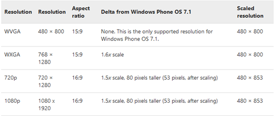
下图所示为同一屏幕显示在具有不同分辨率的手机中。
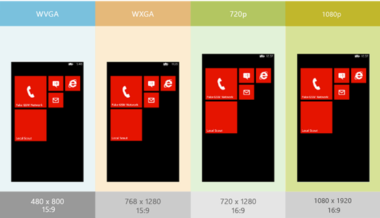
由于所有 Windows Phone OS 7.1 手机均具有相同的分辨率，您可以布局内容以使之在 Windows Phone OS 7.1 手机上显示良好，并确定它将在所有 Windows Phone OS 7.1 手机上显示良好。您无需考虑每个控件如何伸展和流动等内部问题。
在 Windows Phone 8 中，您需要布局控件和其他 UI 元素，以使之在每种支持的纵横比中显示良好。因为 Windows Phone 8 手机具有两种纵横比（15:9 或 16:9），针对一种纵横比布局的控件可能在另一种纵横比下出现意外布局。
若要使页面能在分辨率为 WVGA、WXGA 、720p和1080p 的手机上正确显示，则不要硬编码控件的长和宽或边距。从工具箱中拖放控件后，请删除或仔细测试自动添加的边距。
若要创建可适应布局，您可以使用像网格控件之类的容器。不是对控件的高和宽进行硬编码，而是将控件放置在网格中，并使用 * 和 Auto 值设置其行和列的高和宽。如此一来，应用可以拉伸或缩放控件以使之适合用户手机的高和宽。如果您对控件的高和宽进行硬编码，布局不适应其他分辨率。
若要显示所有分辨率的初始屏幕，则使用分辨率为 768 × 1280 的名为 SplashScreenImage.jpg 的单个图像文件。手机会自动将图像缩放至适当大小。
如果想要提供各种像素的像素完美的初始屏幕，可以使用以下文件名添加图像：
● SplashScreenImage.Screen-WVGA.jpg
● SplashScreenImage.Screen-WXGA.jpg
● SplashScreenImage.Screen-720p.jpg
1080p将自动使用SplashScreenImage.Screen-720p.jpg文件显示初始屏幕
所有初始屏幕图像必须包含在应用项目的根文件夹中。
Android
1.5及更早版本的Android系统，在设计的时候假定系统只会运行在一种分辨率的设备上——HVGA（320×480）分辨率，尺寸为3.2寸。由于系统只能工作在一种屏幕上，开发人员就可以针对那个屏幕来编写自己的程序，而无需去考虑程序在其他屏幕上的显示问题。
但自从 Android 1.6以来，系统引入了对多种尺寸、多种分辨率屏幕的支持，以此满足拥有各种配置的新平台的运行需求。这就意味着开发人员在针对Android 1.6或更新版系统开发程序的时候，需要为自己的程序在多种分辨率的屏幕上良好显示作出额外的设计。
为了简化程序员面在对各种分辨率时的困扰，也为了具备各种分辨率的平台都可以直接运行这些程序， Android平台将所有的屏幕以密度和分辨率为分类方式，各自分成了三类：
三种主要的尺寸：大，正常，小；
三种不同的密度：高（ hdpi），中（mdpi）和低（ldpi）。
如果需要的话，程序可以为各种尺寸的屏幕提供不同的资源（主要是布局），也可以为各种密度的屏幕提供不同的资源（主要是位图）。除此以外，程序不需要针对屏幕的尺寸或者密度作出任何额外的处理。在执行的时候，平台会根据屏幕本身的尺寸与密度特性，自动载入对应的资源，并把它们从逻辑像素（DIP，用于定义界面布局）转换成屏幕上的物理像素。
IOS
iOS设备的碎片化问题显然被控制得很好，这大大减少了游戏开发者的重复劳动。目前，iOS 设备的分辨率有：
iPhone 1、3G、3GS，iPod Touch 1、2、3：320*480（普通屏）
iPhone 4、4S，iPod Touch 4：640*960（3：2 Retina屏）
iPhone 5，iPod Touch 5：640*1136（16：9 Retina屏）
iPad 1，iPad2，iPad mini：768*1024（普通屏）
New iPad，iPad 4：1536*2048（Retina屏）
Windows应用商店应用的布局
了解 Windows 应用商店应用的布局以及它们与传统桌面应用的不同之处。你可以在 Windows 应用商店应用中使用各种界面，如应用窗口、浮出控件、对话框和应用栏。能否根据适当的情况选择合适的界面，将决定应用是易于使用还是难以使用。
应用页面或画布
应用页面（有时称为画布）是 UI 的基础。画布容纳所有内容和控件。你应该尽可能地将 UI 元素集成到这一基础界面中。例如，你可以通过窗口内置的动画来流畅地显示、隐藏或切换错误消息，而不是使用浮出控件来显示错误。显示嵌入式 UI 可以让用户完全沉浸于应用并保持关联感。
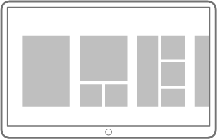
你可以创建所需数量的应用页面，以便支持你的用户方案。请参阅规划 Windows 应用商店应用和导航设计，以了解关于设置应用页面的布局以支持用户方案的详细信息。
调整大小
人们可以调整你的应用的大小以便他们可以使用另一个应用，或者调整另一个应用的大小以便他们可以使用你的应用。你可以设计你的应用，以便内容流在用户调整你的应用的大小时动态地优化用户体验。
|
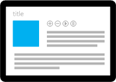 |
全屏 应用填满整个屏幕。 |
|
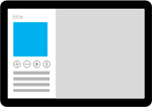 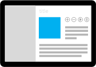 |
已调整大小 应用贴靠到整个屏幕的一个狭窄区域。 其他应用将填满处于贴靠状态的应用未占据的剩余屏幕区域。 |
有关详细信息，请参阅调整大小指南。
触摸键盘和手写面板
触摸键盘和手写面板提供用于输入文本的一个辅助命令 UI。当用户在 Windows 应用商店应用中触摸可编辑输入字段时，或者当用户单击桌面任务栏中的键盘图标时，将显示此面板。当输入字段失去焦点时，此面板将消失。
触摸键盘能够为没有硬件键盘或其他外围键盘设备的外形规格支持文本输入和编辑。手写面板能够为手写外形规格支持文本输入和编辑。
与前面提到的视图状态相似，你可以设计你的应用，以便在显示触摸键盘和手写面板时，内容流能够动态地优化用户体验。
有关支持这些文本输入模式的详细信息，请参阅触摸键盘和手写面板指南。
应用栏
应用栏位于应用页面之外，是应用的主命令界面。使用应用栏可以向用户显示一些导航选项、命令和工具。默认情况下，应用栏会被隐藏，当用户使用手指从屏幕的顶部或底部边缘轻扫时，会显示应用栏。应用栏会覆盖应用内容，用户可以通过从边缘轻扫或与应用交互来取消应用栏。
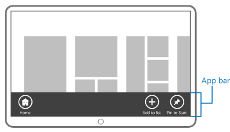
请参阅命令设计了解关于设计你的命令的详细信息，请参阅应用栏指南了解用户体验指南
应用栏在Android和IOS中的实现
在 Android 应用中可使用“操作栏”，其功能与Windows 应用商店应用的应用栏相似。操作栏是活动页首（如使用拆分操作栏，则同时在页首和底部显示）的一组栏，包含控件，用户可与之交互以进行上下文相关操作或在活动之间导航。
IOS中 利用UIToolbar 实现工具栏，功能与Windows 应用商店应用的AppBar功能类似，工具栏位于屏幕页首或底部，用于托管上下文相关菜单项和操作。
超级按钮
超级按钮是每个应用中的用户都会用到的一组特定而一致的按钮：“搜索”、“共享”、“连接”、“设置”和“开始”。我们认为，这些是每个用户在他们所用的几乎每个应用中都需要执行的核心操作。
● 搜索用户可以搜索你的应用或其他应用中的内容，并且可以从其他应用中搜索你的应用中的内容。
● 共享用户可以与他人或服务共享你的应用中的内容。
● 设备用户可以连接到设备并发送内容、流式传输媒体以及进行打印。
● 设置用户可以根据他们的偏好来配置应用并访问用户帮助。
● 开始用户可以直接进入“开始”屏幕。
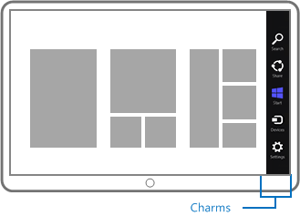
有关详细信息，请参阅以下指南：搜索、共享、应用设置和应用帮助
在 iOS 上最相似的等效控件是 UIActivityViewController